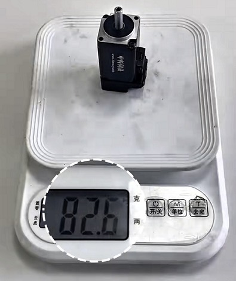

Новости компании

Прощание с точности дрейфа! Точное и стабильное управление высокоточным миниатюрный серво-двигатель Dazhong с большей энергоэффективностью
В области точного привода автоматизированного оборудования дрейф точности является ключевой проблемой для многих предприятий, а высококачественный миниатюрный серво-двигатель — это ключ к решению этой проблемы. Как профессиональный китайский поставщик и производители, Dazhong Electric Motor работает в отрасли уже много лет, на основе собственного глубокого технического опыта выпускает множество высокопроизводительных миниатюрных серво-двигателей, которые благодаря преимуществам точного и стабильного управления, энергоэффективность, строят глобальное партнерство, предоставляют кастомизированное производство и комплексные услуги, помогая отраслям избежать проблем с точностью.
I. Анализ дрейфа точности: ключевая проблема работы точного оборудования
Будь то промышленные автоматизированные производственные линии, медицинское точное оборудование, суставы роботов или гимбалы беспилотников, точность миниатюрный серво-двигатель напрямую определяет эффективность работы оборудования. В практическом применении дрейф точности возникает часто, в основном из-за трех ключевых проблем:
1. Недостаточная точность внутренних компонентов двигателя, например, нелинейный отклик потенциометра, недостаточная разрешающая способность энкодера, приводящая к расхождению между командой и фактическим действием;
2. Плохая адаптивность к окружающей среде, изменения температуры и колебания напряжения вызывают смещение характеристик компонентов, возникают проблемы с температурным дрейфом, дрейфом напряжения и т.д.;
3. Дефекты механической конструкции, зазор между шестернями, смещение при монтаже усиливают потерю точности, и дрейф становится все более выраженным при длительной работе.
Эти проблемы не только влияют на производительность оборудования, но и могут привести к браку продукции, отказу оборудования и увеличению операционных издержек предприятия. Поэтому высококачественный миниатюрный серво-двигатель, способный обеспечить точное и стабильное управление и устранить дрейф, становится настоятельной потребностью отрасли.
II. Dazhong Electric Motor: надёжный китайский поставщик, мощный производитель миниатюрных серво-двигателей
Как производитель, работающий в отрасли двигателей много лет, Dazhong Electric Motor благодаря более чем 300 техническим патентам и более чем 3000 успешным случаям применения стал глобально заслуживающим доверия китайский поставщик миниатюрный серво-двигатель. На основе совершенной продуктовой линейки компания создает серию миниатюрных серво-двигателей, сочетающих точность, эффективность и стабильность, с ярко выраженными преимуществами:
✅ Комплексный контроль качества: от закупки ключевых компонентов до выпуска готовой продукции каждый двигатель проходит строгое тестирование, исключающее проблемы с точностью, вызванные браком компонентов;
✅ Независимая технологическая разработка: интеграция векторного управления, динамической компенсации PID и других передовых технологий, решение проблемы дрейфа точности, адаптация к различным сложным условиям эксплуатации;
✅ Глобальная компоновка: создание сети глобальное партнерство, продукция экспортируется в многие страны и регионы мира, с комплектом совершенных трансграничных сервисных систем;
✅ Возможности кастомизации: предоставление услуг кастомизированное производство в соответствии с потребностями клиентов, адаптация к индивидуальным требованиям привода различных отраслей и оборудования.
III. Презентация основных продуктов: Избранные миниатюрный серво-двигатель Dazhong
На основе мощных возможностей продуктовой разработки Dazhong Electric Motor выпустила множество популярных миниатюрный серво-двигатель, среди которых следующие 3 модели наиболее востребованы на рынке и идеально решают проблему дрейфа точности:

1. Миниатюрный серво-двигатель с фланцем 25 (серия DZ-25FM)
Как продукт, ориентированный на высокую точность, эта модель оснащена абсолютным энкодером высокой разрешающей способности 17Bit, точность позиционирования достигает ±1.5°, полностью устраняя угловой дрейф. При низкой скорости работы (1 об/мин) сохраняет стабильность, без вибраций и расхождений. Использует низковольтное постоянное напряжение 24~72VDC, адаптируется к условиям колебаний напряжения, энергоэффективность выше, чем у аналогичных продуктов отрасли, на 20%, широко применяется в небольших автоматизированных устройствах, суставах роботов и других сценариях.

2. Высокоточный миниатюрный серво-двигатель (серия DZ-MS1R)
Совместим с серво-драйверами серии Inovance MS1-R, оснащен функцией компенсации пульсаций крутящего момента (пульсация крутящего момента <0.5%), в сочетании с энкодером 23Bit абсолютная точность позиционирования достигает ±15 угловых секунд, легко обеспечиваямикронное позиционирование. Корпус выполнен в компактном дизайне, небольшого размера, но способный развивать мощную силу, с отличной перегрузочной способностью. Подходит для медицинского точного оборудования, регулировки гимбалов и других сценариев, требующих высокой точности, является классическим примером кастомизированное производство Dazhong.

3. Энергоэффективный миниатюрный серво-двигатель (серия DZ-YE4)
Сосредоточена на энергоэффективность, использует высокоэффективные магнитные материалы и оптимизированный дизайн обмоток, снижая железные и медные потери, общая энергоэффективность превышает традиционное продукцию на 45%. Одновременно оснащена интеллектуальной системой рециркуляции энергии, которая может преобразовать кинетическую энергию в электрическую на этапе торможения, дальнейшее снижая энергопотребление. Эта модель сочетает точность и энергоэффективность, стабильную точность позиционирования без дрейфа, широко применяется в проектах энергосбережения в отраслях бумаги, нефтехимии и т.д., и получила высокое признание от клиентов, таких как Baosteel, Shandong Sun Paper.
IV. Ключевые характеристики миниатюрный серво-двигатель Dazhong: точное и стабильное управление, поддержка отрасли
1. Точное и стабильное управление, устранение дрейфа
Интеграция энкодера высокой разрешающей способности и передовой технологии замкнутого управления, оптимизация внутренней структуры двигателя, решение ключевых проблем, вызывающих дрейф (нелинейный отклик, температурный дрейф, зазор между шестернями и т.д.). Точность остается стабильной при длительной работе, не требуя частой калибровки, что значительно снижает затраты на ручной сервис.
2. Энергоэффективность, снижение издержек
Использование режима драйва по требованию и технологии рециркуляции энергии, энергопотребление ниже, чем у аналогичных продуктов отрасли, на 20%-45%, одновременно снижение нагрева двигателя, увеличение срока службы, помогающее предприятиям повысить эффективность и снизить издержки на энергию и замену оборудования.
3. Кастомизированные услуги, адаптация к различным сценариям
Предоставление комплексных услуг кастомизированное производство, от анализа требований, проектирования образцов до серийного производства, тестирования и отправки, полное индивидуальное взаимодействие на всех этапах. Возможность разработки индивидуальных решений миниатюрный серво-двигатель в соответствии с размерами оборудования, требованиями к точности и условиями эксплуатации, охватывающих такие отрасли, как металлургия, медицина, робототехника, умный дом и другие.
4. Глобальное сотрудничество, бесперебойный сервис
Глубоко развивает глобальное партнерство, заключает долгосрочные сотрудничества с предприятиями во многих странах и регионах мира, предоставляет трансграничную логистику, монтаж и наладку, послепродажное обслуживание и ремонт и другие комплексные услуги, быстро реагируя на потребности клиентов и решая все проблемы, возникающие в процессе эксплуатации.
Часто задаваемые вопросы (FAQ)V. FAQ Tips: Ответы на распространенные вопросы о миниатюрный серво-двигатель
1. Как долго сохраняется точность миниатюрный серво-двигатель Dazhong, возникает ли поздний дрейф?
Ответ: Используя компоненты высокой стабильности и технологию замкнутого управления, при нормальной эксплуатации точность может стабильно сохраняться 2-3 года без явного дрейфа, достаточна регулярная простая техобслужива для сохранения точности на протяжении всего периода.
2. Как китайский поставщик, может ли Dazhong экспортировать продукцию и какие трансграничные услуги предоставляет?
Ответ: Продукция может быть напрямую экспортирована, создана совершенная глобальная логистическая и послепродажная система, поддерживаются трансграничный монтаж и наладка, послепродажное обслуживание и ремонт за границей, техническое обучение и другие услуги, способствующие реализации глобальное партнерство.
3.Можно ли разработать миниатюрный серво-двигатель с определенными размерами и точностью в соответствии с требованиями моего оборудования?
Ответ: Да, Dazhong имеет профессиональную команду разработки кастомизированных решений, предоставляет полные услуги кастомизированное производство, точно соответствующие требованиям оборудования, с возможностью подтверждения образца перед серийным производством.
4. Какие конкретные сценарии применения для миниатюрного серво-двигателя серии DZ-25FM?
Ответ: Подходит для небольших автоматизированных производственных линий, суставов роботов, интеллектуальных замков, небольших гимбалов и других сценариев, особенно для оборудования с двойными требованиями к размеру и точности.
5. Какое конкретное снижение издержек может обеспечить преимущество энергоэффективность продукта для предприятия?
Ответ: По сравнению с традиционными миниатюрными серво-двигателями энергоэффективность достигает 20%-45%, конкретное снижение издержек зависит от длительности работы оборудования и объема партии, при массовом использовании годовое снижение издержек на энергию может достигать десятков тысяч юаней.
6. Как определить, какой миниатюрный серво-двигатель Dazhong подходит для моего оборудования?
Ответ: Можно связаться с онлайн-консультантом, предоставить параметры оборудования и требования к условиям эксплуатации, мы рекомендуем подходящую модель или предоставляем кастомизированное решение.
7. Какой срок гарантии на продукцию, как обеспечивается послепродажное обслуживание и ремонт?
Ответ: У всех миниатюрный серво-двигатель срок гарантии 1 год, бесплатный ремонт и замена в течение срока гарантии, пожизненная техническая поддержка, иностранным клиентам доступен эксклюзивный канал послепродажного обслуживания для быстрого отклика.
8. Как производители, предоставляет ли Dazhong скидки на массовую закупку?
Ответ: Поддерживается массовая закупка, чем больше объем партии, тем больше скидка, кроме того, предоставляются сопутствующие услуги, такие как массовая кастомизация, эксклюзивная логистика и т.д., для деталей можно связаться с консультантом.
9. Сложен ли монтаж миниатюрного серво-двигателя, предоставляется ли руководство по монтажу?
Ответ: Монтаж простой, приложено подробное руководство по монтажу, кроме того, предоставляются онлайн-руководство по монтажу, видеоролики, при необходимости может быть организован выезд технического специалиста для монтажа и наладки.
10. Какие ключевые конкурентные преимущества у миниатюрный серво-двигатель Dazhong по сравнению с другими китайский поставщик?
Ответ: Ключевые преимущества — «высокая точность без дрейфа + высокая энергоэффективность + кастомизированные услуги», на основе более чем 300 технических патентов и обширных случаев применения в отрасли продукты имеют большую стабильность и адаптивность, кроме того, предоставляются комплексные услуги и поддержка глобальное партнерство.